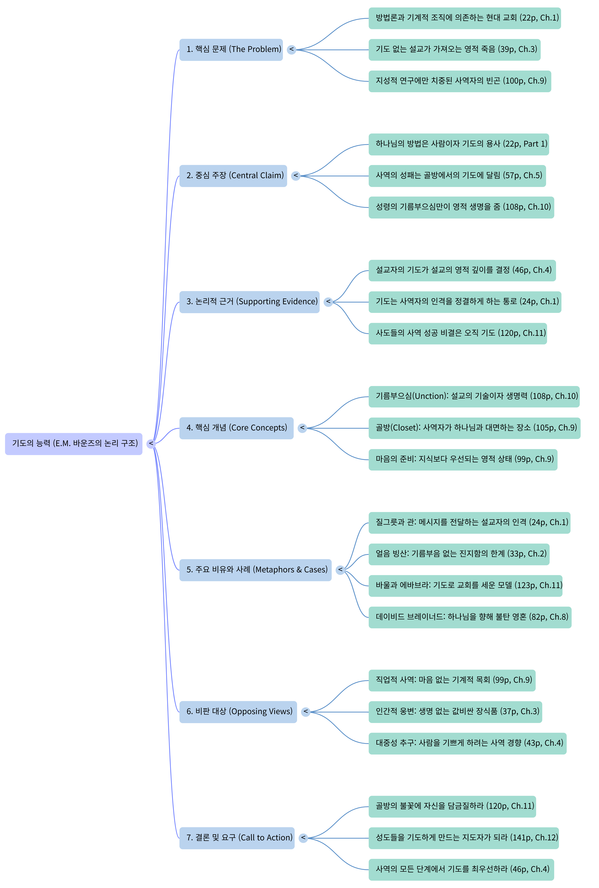

0. 기도의 능력 마인드맵 논리중심

1. 기도의 능력 문제제기
https://teentopia00.github.io/teendocs/s/p3wf6v/E. M. 바운즈의 『기도의 능력』 전체 논리 구조에서 저자가 가장 먼저, 그리고 가장 강력하게 진단하는 '핵심 문제(The Problem)'는 "영적 능력의 자리를 인간적인 방법론과 지성이 대체해 버린 현대 교회의 비극"으로 요약할 수 있습니다.
저자는 이 책 전체를 통해 '생명을 살리는 참된 사역(결과)'을 이끌어내기 위해 '기도하는 사람(원인)'이 필요하다는 논리를 전개하는데, 이 구조의 출발점이 되는 문제의식은 다음과 같은 세 가지 축으로 제시됩니다.
1. 사람과 성령을 대체해 버린 '기계적 방법론'
바운즈가 지적하는 첫 번째 핵심 문제는 교회가 본질을 잃어버리고 시스템에 집착하고 있다는 점입니다. 우리는 효과적인 복음 전도와 교회 성장을 위해 끊임없이 '새로운 방법, 새로운 계획, 새로운 조직'을 궁리하는 데 몰두합니다. 그러나 기계 문명의 시대가 잊어버리기 쉬운 가장 치명적인 진리는, 하나님은 기계나 기발한 방법론이 아니라 '성령이 쓰실 수 있는 사람'을 필요로 하신다는 사실입니다. 교회가 하나님의 방법인 '사람(기도의 사람)'을 간과하고 인간적인 시스템에 의존하는 현상을 저자는 모든 영적 침체의 근본 원인으로 봅니다.
2. 생명이 없는 '문자의 설교'와 깨어지지 않은 '자아'
논리 구조의 두 번째 문제의식은 강단에서 선포되는 메시지의 타락입니다. 저자는 아무리 교리적으로 흠 잡을 데 없이 정통적이고 논리정연하며 수사학적으로 훌륭하다 할지라도, 성령의 기름부음이 없는 설교는 영혼을 살리지 못하고 오히려 '죽이는 설교(의문의 설교)'가 된다고 강하게 비판합니다. 이러한 죽은 설교가 나오는 원인은 설교자 내면의 '자아'가 십자가에 못 박히지 않고 지성소에서 왕 노릇 하고 있기 때문입니다. 즉, 하나님 앞에 완전히 굴복하고 파산하지 않은 내적 교만과 자립심이 신령한 전류가 흐르지 못하게 막는 영적 부도체(不導體) 역할을 하고 있다는 것이 저자가 지적하는 치명적인 문제점입니다.
3. '마음'을 잃고 '머리'만 훈련하는 지적 교만과 기도의 부재
이러한 현상들의 바탕에는 목회자와 성도들의 심각한 '기도 부재'가 자리 잡고 있습니다. 저자는 오늘날 사역자들이 설교의 형식과 감각, 지적 산물 등 '머리를 준비하는 일'에는 힘을 쏟으면서, 정작 가장 중요한 '마음을 준비하는 일'은 잃어버렸다고 탄식합니다. 지식의 부족이 아니라 거룩의 부족이 진짜 결함임에도 불구하고, 많은 이들이 거의 기도하지 않거나(하루 일과 중 잠깐 해치우는 형태), 생명력 없이 길고 산만한 '직업적인 기도'만을 드리고 있습니다. 바운즈는 "거의 기도하지 않는 것"을 일종의 위선이자 미치광이의 짓이라고 부르며, 기도가 없는 시대는 결코 하나님의 능력의 모델을 가질 수 없다고 경고합니다.
전체 논리 구조(Architecture) 속에서의 의미
결국 저자가 제기하는 핵심 문제는 단순한 '시간표상의 기도 부족'을 꼬집는 것이 아니라, 하나님의 능력을 철저히 의지하지 않고 인간의 힘으로 영적인 일을 해내려 하는 교만과 세속화를 직격하는 것입니다.
맨 위로2. 기도의 능력 중심주장
E. M. 바운즈의 『기도의 능력』 전체 논리 구조에서 앞서 살펴본 '핵심 문제(인간적 방법론과 지성주의의 늪)'를 타개하기 위해 저자가 던지는 '중심 주장(Central Claim)'은 다음과 같이 요약할 수 있습니다.
저자는 이 중심 주장을 책 전체에 걸쳐 여러 각도로 논증하며, 영적 사역의 본질을 다음과 같은 4가지 핵심 원리로 뼈대를 세웁니다.
1. 메시지보다 메신저가 먼저다 (사람이 곧 통로다)
바운즈는 복음이 그 자체로 스스로 번식하는 마술적 능력을 가진 것이 아니라, 오직 그 복음을 품은 '사람'을 통해서만 역사한다고 주장합니다. "설교자는 하나님께서 사람에게 주신 메시지를 세우거나 혹은 망친다"며, "설교자가 설교보다 더 중요하다. 설교자가 설교를 만든다"고 단언합니다. 그는 한 편의 진정한 설교를 만드는 데 20년이 걸리는 이유는 바로 "그 사람을 만드는 데 20년이 걸리기 때문"이라고 논증합니다. 즉, 설교자의 거룩함과 성품, 영적 상태 자체가 메시지의 질량을 결정한다는 것이 그의 첫 번째 중심 주장입니다.
2. 머리(지성)가 아닌 마음(영혼)을, 서재보다 골방을 우선하라
이러한 '사람'을 빚어내는 구체적인 장소가 바로 '골방(기도의 자리)'입니다. 저자는 목회자와 성도들이 설교 작성이나 사역의 기법을 배우는 데는 엄청난 에너지를 쏟으면서도 정작 가장 중요한 '마음'을 준비하는 일은 잃어버렸다고 탄식합니다. "우리의 가장 큰 결함은 머리를 준비하는 일이 아니라 마음을 준비하는 일이다. 지식의 부족이 아니라 거룩의 부족이 우리가 안타까워해야 할 결함이다"라고 지적하며, "골방이 첫째요, 연구와 활동은 둘째다"라는 삶의 절대적 우선순위를 강력히 촉구합니다.
3. 생명을 낳는 절대 조건, '거룩한 기름부으심'을 구하라
바운즈의 논리 구조에서 기도의 궁극적인 목적지는 바로 '기름부으심(Unction)'입니다. 아무리 논리 정연하고 웅변적이며 정통 교리에 충실한 설교라 할지라도, 이 신성한 기름부으심이 없으면 영혼을 살리는 생명을 낳지 못하고 죽음을 낳게 된다고 경고합니다. 이 기름부음은 천재에게 주어진 은사나 학문의 전당에서 나오는 것이 아니라, 오직 "골방에서 온다"고 단언합니다. "수많은 시간 동안 눈물을 흘리며 씨름하는 기도"를 통해서만 부음받는 하나님의 선물이며, 이것이 없으면 강단에서의 모든 유창함과 지식은 한낱 인간적인 파문(波紋)에 불과하다고 일갈합니다.
4. '많은 시간'을 바치는 절대적이고 끈질긴 헌신
마지막으로 저자는 이러한 능력이 결코 자투리 시간에 드리는 짧고 형식적인 기도로는 얻어질 수 없음을 못 박습니다. 위대한 능력을 지닌 기도는 단지 '조금 하는 기도'가 아니라 "하나님과 함께 많은 시간을 보내는 것"이며, 이것이 "모든 성공적 기도의 비결"이라고 주장합니다. 그는 존 웨슬리, 데이비드 브레이너드, 찰스 시므온 등 영적 거인들의 사례를 열거하며, 그들이 이른 새벽부터 매일 수 시간씩 하나님과 교제했음을 증거로 삼습니다. 충분한 시간을 들이지 않는 짧막한 기도는 "하나님의 은혜가 흐르는 파이프를 잘라 버리는 것"과 같다고 강력히 경고합니다.
전체 논리 구조 속에서의 의미
결국 E.M. 바운즈의 '중심 주장'은 현상에 대한 단순한 개선안을 넘어서는 '근본적 체질 개선'의 요구입니다. 사역의 성공 여부를 결정짓는 것은 외부의 시스템(문제)이 아니라 설교자 내면의 철저한 파산과 기도(해결책)에 있으며, 오직 기도로 무장된 사람만이 시대를 변화시킬 수 있다는 것이 이 책을 관통하는 가장 파괴력 있는 진리입니다.
맨 위로3. 기도의 능력 논리적 근거
E. M. 바운즈의 『기도의 능력』 논리 구조에서, 앞서 제시된 '문제(인간적 방법론)'와 '중심 주장(기름부으심을 받은 기도의 사람)'을 뒷받침하기 위해 저자가 동원하는 '논리적 근거(Supporting Evidence)'는 철저히 경험적(역사적) 실증과 성경적 원리에 기반을 두고 있습니다.
저자는 단순한 사변적 신학이나 이론을 전개하는 대신, 영적 생명력이 폭발했던 기독교 역사의 구체적인 증거들을 제시하며 자신의 주장을 견고하게 뒷받침합니다. 그가 제시하는 세 가지 핵심 논거는 다음과 같습니다.
1. 영적 거인들의 압도적인 역사적 실증 (Historical Evidence)
저자의 가장 강력하고 반복적인 논거는 기독교 역사상 위대한 부흥과 영적 열매를 맺었던 인물들의 '공통된 삶의 패턴(절대적인 기도 시간)'입니다. 그는 능력 있는 사역이 결코 우연이나 재능에서 비롯된 것이 아님을 다음의 역사적 사례들로 증명합니다.
- 데이비드 브레이너드: 환경이나 조건이 아닌 '기도의 사람'이 어떻게 영적 지형을 바꾸는지 보여주는 결정적 증거로 제시됩니다. 그는 무식하고 비천한 인디언들 사이에서 밤낮없이 영혼의 씨름을 하며 기도했고, 그 결과 인디언들에게 거대한 회심의 역사가 일어났습니다.[1]
- 시간표의 증명: 저자는 마르틴 루터("할 일이 너무 많기 때문에 매일 3시간씩 기도하지 않고는 일어날 수가 없다"), 존 웨슬리(매일 새벽 4시부터 2시간씩 기도), 찰스 시므온(새벽 4시부터 8시까지 기도) 등 영적 거인들의 실제 삶을 증거로 제출합니다. 이를 통해 "하나님과 함께 많은 시간을 보내는 것이 모든 성공적 기도의 비결"이라는 자신의 주장을 역사적 팩트로 논증합니다.
2. 성경적 전형과 사도들의 모델 (Biblical Precedents)
두 번째 근거는 기독교의 가장 완벽한 모델인 예수 그리스도와 사도들의 행적입니다. 저자는 현대 교회가 의존하는 '조직과 지성'이 아니라, 초대 교회를 움직인 원동력이 '기도'였음을 성경을 통해 입증합니다.
- 예수 그리스도와 선지자들: 예수님이 새벽 오히려 미명에 일어나 기도하셨던 사실, 엘리야가 비를 내리기 위해 간절히 기도했던 사실, 다니엘이 하루 세 번씩 기도했던 사실 등을 들어 기도가 영적 승리의 필수 조건임을 증명합니다.
- 사도 바울의 절대적 의존: 저자는 신약성경의 위대한 학자요 개척자인 바울조차 자신의 지성이나 교양, 심지어 사도의 권위에 의지하지 않았음을 강조합니다. 바울은 밤낮을 가리지 않고 기도했으며, 에베소, 골로새, 데살로니가 교인들에게 끊임없이 기도의 지원을 요청했습니다. 바울의 이러한 태도는 "설교자는 무엇보다도 먼저 뛰어난 기도의 사람이어야 한다"는 주장의 완벽한 성경적 논거가 됩니다.
3. 원인과 결과의 대비를 통한 현상적 논증 (Phenomenological Logic)
저자는 영적 사역의 현상(열매)을 대비시켜 기도의 절대적 필요성을 논증합니다. 기도가 배제된 '문자의 설교'와 기도로 빚어진 '기름부음의 설교'가 만들어내는 결과를 극명하게 대조합니다.
- 죽이는 설교 vs 살리는 설교: 기도가 약한 설교자는 영적 생명을 주는 힘도 약하며, 아무리 훌륭하게 구성되고 유창한 설교라도 성령의 기름부음이 없으면 영혼을 죽이는 '의문의 설교'가 되고 만다는 논리를 펼칩니다.
- 기름부으심(Unction)의 독특성: 이 신성한 기름부으심은 천재에게 주어지는 은사나 학문의 전당에서 나오는 것이 아니라 오직 '골방'에서 수많은 시간 동안 눈물을 흘리며 씨름하는 기도를 통해서만 주어짐을 강조합니다. 기도가 없으면 기독교 진리는 그저 '지브롤터 해협에 일어나는 파문'처럼 금세 사라지고 마는 무력한 지식에 불과하다고 논증합니다.
전체 논리 구조 속에서의 의미
E. M. 바운즈의 논리 구조 내에서 이 '근거(Evidence)' 파트가 갖는 위상은 '변명과 합리화의 차단'입니다. 현대의 사역자들이 "시대가 변했다", "바빠서 기도할 시간이 없다", "학문적 연구가 더 중요하다"고 항변할 때, 저자는 성경적 인물들과 역사상 가장 바쁘고 위대한 업적을 남긴 영적 거인들의 실제 삶(데이터)을 들이밀며 그 모든 변명을 무너뜨립니다. 즉, "진정한 영적 능력은 시대를 막론하고 오직 '많은 시간을 바친 기도'에서만 나왔다"는 귀납적이고도 연역적인 증명을 완성하는 것입니다.
맨 위로4. 핵심개념
[[기도의 능력 요약]]
E. M. 바운즈의 『기도의 능력』 논리 구조 속에서 '핵심 개념(Core Concepts)'은 단순한 신학적 용어가 아니라, 죽은 사역(문제)을 살리는 사역(해결)으로 전환시키기 위한 구체적인 영적 메커니즘을 형성합니다. 책 전체에서 반복적으로 대비되며 논리를 이끌어가는 주요 핵심 개념들은 다음과 같습니다.
| 핵심 개념 | 대비 구도 | 논리적 기능 |
|---|---|---|
| 사람 | 사람 vs. 방법/기계 | 성령이 역사하는 통로이며, 하나님의 사역에서 가장 중요한 무기입니다. |
| 마음 | 마음 vs. 머리 | 참된 설교의 원천이며, 지성보다 먼저 준비되어야 할 내적 중심입니다. |
| 골방 | 골방 vs. 서재 | 마음을 훈련하고 기도의 능력을 덧입는 절대적인 영적 공간입니다. |
| 기름부으심 | 성령의 생명 vs. 문자의 죽음 | 설교의 생사를 가르는 절대적 기준이며 골방의 기도로 주어지는 선물입니다. |
| 많은 시간 | 헌신 vs. 자투리 기도 | 성공적 기도의 비결이며 깊은 영적 능력을 위한 필수 조건입니다. |
1. 사람 (사람 vs. 방법/기계)
이 책의 가장 근본적인 개념은 '사람'입니다. 현대 교회가 새로운 조직과 기발한 방법을 궁리하는 데 몰두하고 있지만, 저자는 "교회는 더 나은 방법을 찾고 있지만 하나님은 더 나은 사람을 찾고 계신다"라고 단언합니다. 성령은 기계나 계획에 임하는 것이 아니라, 오직 기도의 사람에게 임하며 사람을 통해서 역사하십니다. 따라서 하나님의 사역에 있어서 가장 중요한 통로이자 무기는 뛰어난 재능이 아닌 십자가에 못 박힌 '사람' 그 자체입니다.
2. 마음 (마음 vs. 머리)
저자는 설교의 참된 원천을 지성(머리)이 아닌 '마음'으로 규정합니다. 많은 설교자들이 설교 작성 기법이나 학문 등 머리를 준비하는 데는 힘을 쏟으면서도, 정작 우리의 가장 큰 결함은 머리를 준비하는 일이 아니라 마음을 준비하는 일이라고 꼬집습니다. 위대한 사상이나 교양이 아니라, 하나님을 향해 불타는 마음이 참된 설교자를 만들며 복음을 흐르게 하는 가장 강력한 힘이 됩니다.
3. 골방 (골방 vs. 서재)
'마음'을 훈련하고 기도의 능력을 덧입는 절대적인 영적 공간이 바로 '골방'입니다. 저자는 "참된 설교는 골방에서 만들어진다"고 역설하며, 골방의 기도가 서재의 연구나 마땅히 해야 할 사역 활동에 희생되어서는 안 된다고 경고합니다. 서재가 지식을 얻는 곳이라면, 골방은 마음의 공부방이며 다른 어느 곳에서도 찾을 수 없는 참된 지혜와 영적 생명을 배우는 교실입니다.
4. 거룩한 기름부으심 (Unction)
골방에서의 기도를 통해 궁극적으로 얻게 되는 가장 중요한 열매이자, 설교의 생사를 가르는 절대적 기준입니다. 아무리 논리 정연하고 훌륭하게 구성된 문자의 설교라 할지라도, 이 신성한 기름부으심이 없으면 영혼을 살리는 생명을 낳지 못하고 오히려 죽음을 낳게 됩니다. 이 기름부으심은 천재의 은사나 학문의 전당에서 나오는 것이 아니라, 오직 수많은 시간 동안 눈물을 흘리며 씨름하는 골방의 기도를 통해서만 주어지는 하늘의 이슬과 같은 선물입니다.
5. 많은 시간 (Time)
바운즈의 논리에서 기도의 능력은 결코 요행이나 형식적인 짧은 기도로 얻어지지 않습니다. 하나님과 "많은 시간을 보내는 것이 모든 성공적 기도의 비결"이며, 시간에 대한 헌신 없이 깊은 영적 능력을 기대할 수 없습니다. 자투리 시간에 드리는 짧막한 기도는 하나님의 은혜가 흐르는 파이프를 잘라 버리는 것과 같으며, 우리의 황금 시간에 힘을 다해 드리는 끈질긴 기도가 필수적입니다.
전체 논리 구조 속에서의 의미
이러한 핵심 개념들은 서로 치밀하게 연결되어 바운즈의 논리적 뼈대를 완성합니다. 즉, 인간적 방법(머리/서재)에 의존하는 죽은 사역의 굴레에서 벗어나, 많은 시간을 바치는 기도(골방)를 통해 거룩한 기름부으심을 받은 참된 생명의 통로(마음/사람)로 거듭나야 한다는 저자의 강력한 선언을 입체적으로 뒷받침하는 중추 역할을 하고 있습니다.
맨 위로5. 주요 비유와 사례

E. M. 바운즈의 『기도의 능력』 논리 구조에서 주요 비유와 사례(Metaphors & Cases)는 단순한 문학적 수사나 이해를 돕기 위한 보조 도구가 아닙니다. 저자는 지성과 방법론에 빠진 현대 교회의 교만을 타격하기 위해 극단적이고 시각적인 은유를 사용하며, 자신의 주장이 공허한 이론이 아님을 증명하기 위해 역사적 거인들의 실제 삶을 증거물로 제출합니다.
이 책을 관통하는 핵심 비유와 사례들은 다음과 같은 역할을 수행합니다.
1. 핵심 비유: 생명과 죽음의 극단적 대조 (시체 vs. 생수)
저자는 인간의 지성으로만 만들어진 '기도 없는 설교'의 끔찍함을 폭로하기 위해 '죽음'의 이미지를 반복적으로 사용합니다.
- 관 장식과 시체: 아무리 수사학적으로 훌륭하고 교리적으로 완벽한 설교라 할지라도, 기도의 기름부음이 없다면 그것은 "시체를 담은 관 위에 놓인 작고 아름다운 꽃에 지나지 않는다"고 일갈합니다.
- 겨울과 서리: 기도가 없는 문자의 설교는 싹을 내지 못하는 "겨울의 씨앗", "얼어붙은 겨울 땅"과 같으며, 결국 영혼을 죽이는 찬 서리가 된다고 경고합니다.
- 생수와 봄: 반면, 자아를 십자가에 못 박은 자의 설교는 영혼을 살리는 "생명수의 강"이 되며, 만물을 소생시키는 대자연의 봄과 같다고 대조합니다.
2. 핵심 비유: 통로로서의 '금관'과 잘려나간 '파이프'
하나님의 능력이 사람을 통해 어떻게 전달되는지를 시각적으로 보여주는 가장 중요한 비유입니다.
- 금관(Golden Pipe): "설교자는 하나님의 기름이 통과하는 금관이다"라고 정의합니다. 이 관은 막히지 않고 흠이 없어야 낭비 없이 은혜가 흐를 수 있습니다. 즉, 메시지 자체보다 통로가 되는 '사람의 거룩함'이 더 중요하다는 논리적 근거가 됩니다.
- 잘린 파이프: 저자는 기도를 대충 하거나 자투리 시간에 해치우는 행위를 "하나님의 은혜가 흐르는 파이프를 잘라 버리는 것"이라고 강력하게 비유하며, 골방에서 충분한 시간을 보낼 것을 촉구합니다.
3. 핵심 비유: 작동하지 않는 '기계'와 날 선 '검'
교회가 의존하는 시스템(문제)과 성령의 능력(해결책)을 대비시킵니다.
- 기계와 엔진: "성령은 기계에 임하지 않고 사람에게 임한다"며 인간적인 방법론을 배격합니다. 기도가 없는 설교는 마치 "불이 붙지 않으면 엔진이 움직이지 못하는 것같이" 아무리 정교해도 움직이지 않는 고철 덩어리에 불과합니다.
- 예리한 검: 반면 기도를 통해 하늘에서 내려오는 기름부으심은 "좌우에 날선 예리한 검"이 되어 사람의 혼과 영을 찔러 쪼개고, 마음에 전쟁을 일으키며 생명을 낳는다고 묘사합니다.
4. 핵심 사례: 변명을 차단하는 역사적 증거들
저자의 비유가 시각적 충격을 준다면, 그가 동원하는 인물들의 사례는 "바빠서 혹은 시대가 달라서 기도할 수 없다"는 독자의 모든 합리화를 무너뜨리는 실증적 데이터로 기능합니다.
- 루터와 시므온 (시간의 증명): 마르틴 루터는 "만약 내가 매일 새벽 2시간을 기도로 보내지 않는다면, 그 날의 승리는 마귀에게로 돌아갈 것이다. 나는 할 일이 너무 많기 때문에 매일 3시간씩 기도하지 않고는 일어날 수가 없다"고 고백했습니다. 찰스 시므온은 새벽 4시부터 8시까지 기도에 바쳤습니다. 이는 '바쁠수록 더 기도해야 한다'는 주장의 완벽한 귀납적 증거입니다.
- 사도 바울 (지성의 굴복): 기독교 최고의 지성이자 신학자인 바울조차 자신의 학식이나 사도적 권위에 의지하지 않고, 성도들에게 끊임없이 기도의 지원을 요청(갈망)하며 밤낮으로 기도에 매달렸던 사례를 통해, 인간의 지성을 십자가에 못 박아야 한다는 논리를 강화합니다.
- 데이비드 브레이너드 (최악의 환경을 이긴 기도): 질병과 언어 장벽, 무지한 이교도라는 극한의 상황 속에서도 오직 숲속에서 피땀 흘려 기도함으로써 거대한 부흥을 이끌어낸 사례를 통해, '환경이나 조건이 아니라 기도의 사람만이 하나님의 방법이다'라는 책의 주제를 최종적으로 완성합니다.
전체 논리 구조 속에서의 의미
E. M. 바운즈의 논리 구조 안에서 이러한 비유와 사례들은 '박제된 진리를 펄떡이는 생명으로 바꾸는 역할'을 합니다. 이론과 방법론에 매몰된 차가운 지성주의(문제)를 해체하기 위해 저자는 '시체, 서리, 고장 난 엔진'과 같은 파괴적인 은유를 사용하고, 동시에 루터, 바울, 브레이너드라는 영적 거인들의 피 묻은 무릎(사례)을 제시함으로써 "결국 시대를 깨우는 것은 기도하는 '한 사람'뿐이다"라는 절대적인 결론(중심 주장)으로 독자를 강렬하게 몰아갑니다.
맨 위로6. 비판대상
E. M. 바운즈의 『기도의 능력』 논리 구조에서 저자가 강력하게 타격하는 '비판 대상(Opposing Views)'은 단순히 교회 내의 소수 의견이나 이단적 사상이 아닙니다. 저자는 오히려 당대(그리고 현대) 교회가 가장 자랑스럽게 여기고 의존하는 주류 목회 철학과 관행들을 정조준하여 비판합니다.
이러한 비판은 독자가 의지하고 있는 '거짓된 안전지대'를 산산조각 내어, 오직 '골방의 기도'라는 유일한 대안으로 몰아넣기 위한 치밀한 논리적 해체 작업입니다. 저자가 비판하는 주요 대상은 다음과 같습니다.
1. 새로운 '방법'과 '시스템'에 대한 집착 (기계적 방법론)
저자의 가장 뼈아픈 비판은 사람보다 계획과 조직을 우선시하는 교회의 세속적 추세에 향해 있습니다. 우리는 효과적인 복음 전도와 교회 성장을 위해 끊임없이 새로운 방법과 기발한 조직을 궁리하는 데 몰두합니다. 그러나 바운즈는 "교회는 더 나은 방법을 찾고 있지만 하나님은 더 나은 사람을 찾고 계신다"고 일갈하며, 성령은 기계나 계획에 기름을 붓는 것이 아니라 오직 기도의 사람에게 임하신다고 비판합니다.
2. 생명을 잃어버린 '지성주의'와 '문자의 설교'
저자는 학문적 탁월함과 교리적 정통성 자체를 부정하지는 않지만, 기도가 결여된 채 머리로만 만들어진 설교를 "죽이는 설교(문자의 설교)"라고 맹렬히 비판합니다. 아무리 교리적으로 흠 잡을 데 없이 정통적이고 수사학적으로 아름답다 할지라도, 성령의 기름부음이 없다면 그것은 "시체를 담은 관 위에 놓인 작고 아름다운 꽃에 지나지 않는다"고 지적합니다. 그는 오늘날 설교자들의 가장 큰 결함이 지식의 부족이 아니라 거룩의 부족, 즉 머리를 준비하느라 마음을 준비하는 일을 잃어버린 것이라고 비판합니다.
3. 지성소에서 왕 노릇 하는 '자아' (깨어지지 않은 교만)
하나님의 능력이 강단에서 나타나지 않는 근본 원인으로, 저자는 설교자 내면에 있는 십자가에 못 박히지 않은 '자아'를 지목합니다. 겉으로는 정통 교리와 진지함을 갖추었을지라도, 내면의 밀실이 하나님께 완전히 굴복하지 않고 "자아가 지성소에서 왕노릇하고 있는 것"이 치명적인 문제입니다. 이러한 영적 부도체(不導體)가 들어앉아 있으면 신령한 전류가 흐르지 못하며, 결국 생명을 창조할 수 없다고 비판합니다.
4. 사역의 두 가지 극단: '학도병'과 '대중주의자'
바운즈는 기도를 잃어버린 사역자들이 빠지기 쉬운 두 가지 극단적 경향을 비판합니다.
- 은둔하는 책벌레: 사람들과의 접촉을 단절하고 위대한 학도나 설교 제조가가 되는 데만 파묻혀, 결국 마음이 없는 직업인이나 합리주의자로 전락하는 경향입니다.
- 철저한 대중주의자: 반대로 사역을 철저히 대중적으로 하여 사람들을 감동시키고 종교적 흥미를 일으키는 데만 집중하는 부류입니다. 이들은 사람을 위한 사역을 하느라 기도의 자리를 잃어버리고, 결국 진정한 열매 없는 재앙을 초래한다고 비판합니다.
5. 일말의 진정성도 없는 '직업적인 기도'와 '거의 기도하지 않는 태도'
저자는 아예 기도하지 않는 것뿐만 아니라, 강단에서 이루어지는 길고 산만하며 공허한 '직업적인 기도'를 강하게 질타합니다. 또한, 잠자리에 들기 전이나 아침에 서둘러 잠깐 해치우는 식의 "거의 기도하지 않는 것"을 일종의 위선이자 양심의 노예, 광대의 극의라고 부르며 강력히 비판합니다.
전체 논리 구조 속에서의 의미
E. M. 바운즈의 논리 구조 내에서 이 '비판 대상(Opposing Views)' 파트는 '대체 불가능성의 증명' 역할을 수행합니다. 현대 교회는 기도의 빈자리를 화려한 수사학, 신학적 지식, 거대한 조직, 대중을 사로잡는 프로그램 등으로 대체하려 하지만, 저자는 이 모든 것들이 영적인 생명을 낳는 데는 완전히 무능한 '고장난 엔진'이나 '서리'에 불과함을 폭로합니다.
결국 이 철저한 비판과 해체 작업을 통해, 독자는 "골방에서 하나님과 많은 시간을 보내며 기름부으심을 얻는 것 외에는 어떤 사역적 꼼수나 지적 우회로도 존재하지 않는다"는 책의 핵심 결론 앞에 변명할 여지 없이 서게 됩니다.
맨 위로7. 결론 및 요구
E. M. 바운즈의 『기도의 능력』 논리 구조의 종착지인 '결론 및 요구(Call to Action)'의 관점에서 볼 때, 4장에서 역설하는 "사역의 모든 단계에서 기도를 최우선하라"는 메시지는 단순한 목회적 권면을 넘어 독자의 삶을 근본적으로 뒤집을 것을 촉구하는 가장 강력한 실천적 명령입니다.
제공된 자료의 4장(특히 46쪽)과 책 전체의 결론부를 바탕으로 이 주제를 분석하면 다음과 같습니다.
1. 사역의 질(Quality)을 결정하는 절대적 기준 (4장, 46쪽의 핵심)
저자는 46쪽에서 기도가 사역의 일부가 아니라 사역의 성패를 좌우하는 핵심 동력임을 분명히 합니다.
- 기도의 성격이 설교의 성격을 결정한다: 바운즈는 "가벼운 기도는 가벼운 설교를 낳는다"고 경고하며, 설교를 많이 하는 사람일수록 기도를 더 많이 해야 한다고 강력히 주장합니다. 기도는 설교를 강하게 하고, 설교에 기름을 부으며, 사역에 훌륭한 결과를 가져오는 필수불가결한 요소입니다.
- 가장 중요한 시간에 바치는 가장 진지한 헌신: 기도는 식사 시간에 잠시 나누는 덕담이나 사소한 버릇이 될 수 없으며, "우리가 갖는 가장 긴 만찬이나 가장 푸짐한 잔치보다 더 많은 시간과 더 많은 식욕을 가지게 하는 것"이어야 합니다. 즉, 남는 자투리 시간이 아니라 하루 중 황금 시간을 온전히 바쳐야 하는 가장 진지한 일입니다.
- 우선순위의 철저한 재조정: 저자는 "골방이 첫째요, 연구와 활동은 둘째다"라고 단언합니다. 목회자가 마땅히 해야 할 사역 활동이나 서재에서의 연구 때문에 골방의 기도가 희생되어서는 안 되며, 도리어 연구와 활동은 골방의 기도를 통해서만 생기를 얻고 열매를 맺을 수 있다고 역설합니다.
2. 전체 논리 구조 속 '결론 및 요구 (Call to Action)'로서의 의미
이러한 4장의 선언은 책 후반부(12장 등)로 이어지면서, 저자가 이 책을 통해 독자에게 궁극적으로 끌어내고자 하는 '행동의 변화(Call to Action)'로 확장됩니다.
- 새롭게 '기도 학교'에 입학하라 (시간의 구조조정): 저자는 자신의 철학에 동의하는 것에 그치지 않고, 독자들이 삶의 시간표를 완전히 뜯어고칠 것을 요구합니다. "참된 기도는 아무리 드려도 지나침이 없다"며, 우리는 기도의 가치를 새롭게 배우고 "새롭게 기도 학교에 입학해야 한다"고 촉구합니다. 하루 중 가장 좋은 시간을 골라 하나님과 기도에 드리기로 결심하고 그것을 굳게 지켜내는 것만이 이 책이 요구하는 첫 번째 행동 변화입니다.
- 자신을 제물로 바치는 '기도의 지도자'가 되라: 저자는 시대를 향한 탄식과 함께 독자들을 향해 거룩한 도전을 던집니다. 현시대는 기도가 없는 세대이며, 헌금이나 돈을 내놓는 평신도들은 있어도 자신을 기도에 온전히 드리려는 자는 없다고 질타합니다. 따라서 교회를 다시 기도로 돌아오게 할 사람, 곧 "이 시대에 꼭 필요한 사람이 되라"는 것이 저자의 궁극적인 요구입니다.
- 행동 없는 지성과 재능의 파산 선고: 결론적으로 바운즈는 타고난 재능이나 교육의 성과, 기발한 방법론이 세상을 바꾸는 것이 아님을 독자 스스로 인정하라고 촉구합니다. 자기를 부인하고 하나님의 충만하심을 끝없이 갈망하는 '기도할 수 있는 능력'만이 시대를 혁신할 수 있으며, 독자 자신이 철저한 십자가의 파산을 선고받고 "하나님께로 돌아선 사람"이 될 것을 엄중히 요구하고 있습니다.
요약하자면, "사역의 모든 단계에서 기도를 최우선하라"는 46쪽의 지침은 이 책의 서론에 제기된 '인간적 방법론에 의존하는 교회의 비극'을 타개하기 위한 구체적인 액션 플랜입니다. E. M. 바운즈의 전체 논리 구조 안에서 이는 "당신의 연구와 활동을 멈추고, 하루 중 가장 좋은 시간을 골방에 바치는 기도의 용사로 즉각 돌아서라"는 강력하고도 절대적인 행동 촉구(Call to Action)로 완성됩니다.
맨 위로질문1. 하나님의 금관이 되기 위한 '자아 파산'의 과정
E. M. 바운즈는 설교자를 "하나님의 기름이 통과하는 금관"으로 비유합니다. 이 관은 단순히 금으로 만들어진 것을 넘어, 막히거나 흠이 없어야만 하나님의 은혜와 기름부으심이 아무 거침없이, 낭비됨 없이 온전히 흐를 수 있습니다. 이 깨끗한 금관이 되기 위해 사역자가 반드시 통과해야 하는 내면의 과정이 바로 철저한 '자아 파산'과 '십자가의 죽음'입니다.
제공된 자료에 나타난 자아 파산의 과정은 다음과 같은 단계로 이해할 수 있습니다.
1. 내면의 방해물 직시: 지성소에서 왕 노릇 하는 '자아' 인식
사역을 가로막는 가장 큰 방해물은 열악한 환경이나 방법론의 부재가 아니라, 바로 설교자 자신 안에 있습니다. 아무리 훌륭한 정통 교리와 순결, 진지함을 겉으로 갖추었다 할지라도, 내면의 밀실이 하나님께 완전히 굴복하여 산산이 부서지지 않았다면 결코 생명을 창조할 수 없습니다. 이는 내면의 가장 거룩한 장소인 지성소에서 하나님이 아니라 설교자의 '자아'가 왕 노릇 하고 있기 때문이며, 이 교만한 자아는 신령한 전류가 흐르지 못하게 막는 치명적인 '영적 부도체'로 작용합니다.
2. 철저한 절망과 영적 무능력에 대한 울부짖음
진정한 자아 파산은 자신이 영적으로 완전히 파산하였고, 스스로는 아무 생명도 낳을 수 없는 철저히 무능력한 존재임을 자각하는 데서 시작됩니다. 내면 깊은 곳에 숨어 성전을 더럽히고 있던 자부심과 자신감이 무너져 내릴 때, 사람은 자신에 대한 깊은 절망과 스스로 어찌할 수 없는 연약함 때문에 하나님 앞에 엎드려 울부짖게 됩니다.
3. 세상과 자아에 대한 가혹한 파산 선고 (십자가에 못 박힘)
하나님께서 진정으로 원하시는 사람은 단순히 인격을 수양한 사람이 아니라, "완전히 부패하여 회복의 가능성도 기대도 없는 자신과 세상에 대해 파산을 선고한 사람"입니다. 이는 자아에 대한 철저한 죽음이며, 영혼의 진통을 동반하는 십자가를 지는 일입니다. 스스로를 비우는 믿음과 열심으로 가혹한 십자가에 자신을 던져 부서뜨리고 세상으로부터 완전히 죽어야만 합니다.
4. 정결하게 비워진 금관에 채워지는 생명의 불
자아라는 찌꺼기가 십자가에서 철저히 파산되고 비워질 때, 비로소 막혀있던 금관이 뚫리게 됩니다. 철저히 절망한 그 빈자리에 비로소 하나님의 능력과 불이 밀려 들어와 속사람을 채우고, 성전을 거룩하게 정결케 하며 사역의 능력을 부어주십니다. 이 파산의 과정을 거쳐 온전한 마음으로 하나님께 돌아선 사람만이 생명을 전달하는 통로가 됩니다.
결론적으로, 바운즈는 "십자가에 못박힌 설교만이 생명을 줄 수 있다. 십자가에 못박힌 설교는 십자가에 못박힌 사람에게서만 나올 수 있다"고 단언합니다. 즉, 철저한 자아 파산을 통해 영적 부도체를 제거한 사람만이, 하나님의 능력이 막힘없이 흐르는 온전한 '금관'으로 쓰임 받을 수 있습니다.
맨 위로질문2. 개인의 기도를 넘어, 바울의 본보기를 통해 본 '성도들의 중보기도(기도 지원)'는 왜 절대적으로 필요한가
E. M. 바운즈는 『기도의 능력』 12장("기도하고 기도하게 하라")을 중심으로, 사역자 개인의 기도를 넘어 성도들의 '중보기도(기도 지원)'가 절대적으로 필요한 이유를 사도 바울의 생생한 본보기를 통해 다음과 같이 논증합니다.
1. 분리될 수 없는 두 명제: "설교자는 기도해야 하고, 기도 지원을 받아야 한다"
바운즈는 기도를 사역자 개인의 골방에만 가둬두지 않습니다. 그는 "설교자는 기도해야 한다"는 명제와 "설교자는 기도 지원을 받아야 한다"는 명제가 결코 분리되어서는 안 되는 하나의 연합체라고 선언합니다. 사역자가 자신에게 주어진 중대한 일을 제대로 이루기 위해서는 스스로 최대의 기도를 해야 함과 동시에, 다른 사람의 기도 지원 역시 최대한으로 받아야만 합니다.
2. 대양을 이루는 '무적의 영적 능력' (영적 시너지)
바울이 성도들에게 기도를 그토록 간청했던 이유는 기도의 연합이 만들어내는 '무적의 힘'을 알고 있었기 때문입니다. 믿음과 소망과 기도가 한곳으로 모이고 집중될 때 영적인 힘은 아무도 저항할 수 없을 만큼 거대해집니다. 바운즈는 "한 사람 한 사람의 기도가 모이면 마치 물방울이 모이는 것처럼 대양을 이루어 모든 저항을 격파할 수 있다"고 묘사하며, 바울이 흩어진 성도들의 기도를 모아 자신의 사역에 쏟아부음으로써 복음 전파를 대양처럼 강하고 무적이 되게 만들려 했다고 강조합니다.
3. 위대한 사도 바울의 철저한 의존과 겸손
바운즈가 제시하는 가장 강력한 논거는 바로 바울이라는 인물 그 자체입니다. 만약 자신의 지력, 교양, 인격, 그리고 하나님께 부름받은 '사도의 권위'만으로 복음을 전파할 수 있는 사람이 있다면, 그 사람은 단연코 바울이었을 것입니다. 하지만 바울은 자신의 능력이나 훌륭한 설교에 의지하지 않고, 에베소, 골로새, 데살로니가, 고린도, 로마 등 수많은 교회의 성도들에게 끊임없이 기도 지원을 구걸하듯 요청했습니다. 그는 성도들에게 기도를 부탁하는 것이 자신의 사도적 권위를 격하시키거나 명성을 떨어뜨린다고 결코 생각하지 않았습니다. 아무리 '사도 중의 사도'로 부름받았다 할지라도, 성도들의 기도가 뒷받침되지 않으면 자신의 모든 사역 준비가 완전히 무력해진다는 사실을 깊이 통찰하고 있었던 것입니다.
4. 사역의 최종 목적: "교회가 기도하게 하는 것"
이러한 바울의 본보기를 통해 바운즈가 궁극적으로 도달하는 결론은, 참된 영적 지도자의 사명은 그저 혼자 기도하는 데서 끝나지 않는다는 것입니다. "사도들이 간청하고 목적한 바는 교회가 기도하게 하는 것"이었습니다. 교회의 지도자는 교회의 심장과 삶 속에 기도의 절대적 중요성을 심어 주어야 하며, 성도들이 일에 치여 기도를 소홀히 하지 않도록 이끌어야 합니다.
결론적으로, 바운즈는 "기도하는 사도가 기도하는 성도를 낳고, 기도하는 강단이 기도하는 청중을 낳는다"고 단언합니다. 바울의 생애가 증명하듯, 성도들의 중보기도는 사역자의 부족함을 채우는 단순한 보조 수단이 아니라, 세상을 뒤집는 영적 대양을 잉태하기 위해 절대적으로 요청되는 교회의 핵심 동력입니다.
맨 위로질문3. 거룩한 기름부으심(Unction)과 인간적인 진지함(Earnestness)의 결정적 차이는 무엇인가
E. M. 바운즈는 『기도의 능력』 10장에서 많은 사역자들이 인간적인 '진지함(Earnestness)'을 성령의 '거룩한 기름부으심(Unction)'으로 착각하거나 대체하는 치명적인 실수를 범하고 있다고 지적합니다. 겉보기에는 두 가지가 매우 유사해 보일 수 있으나, 그 근원과 본질, 그리고 영적 결과에 있어서 다음과 같은 결정적인 차이가 있습니다.
1. 에너지의 근원: 인간의 한계 vs. 하늘의 이슬
- 진지함: 진지함은 성실하고 신중하며 열렬하고 끈기가 있을 수 있지만, 절대 인간의 한계를 벗어나지 못합니다. 진지함의 배후에는 의지와 마음, 두뇌와 지혜, 계획과 노력 등 다분히 '인간적인 것'이 도사리고 있습니다.
- 기름부으심: 인간의 재능이나 서재(학문 연구)에서 나오는 것이 아니라, 오직 은밀한 골방에서 기도의 응답으로 주어지는 '하늘의 이슬'이자 성령의 호흡입니다. 인간이 결코 창조해 낼 수 없는 전적인 하나님의 선물입니다.
2. 동력과 본질: 세상의 불씨 vs. 설교 안의 신적인 것
- 진지함: 인간의 힘으로만 추진되며, 저자는 진지함을 향해 "그 제단은 세상의 손으로 만들어지며, 그 불도 세상의 불씨로 지펴진다"고 비판합니다. 심지어 인간은 자신의 이기적인 계획이나 목적에 대해서도 아주 진지할 수 있으므로, 진지함은 때로 "위장된 이기심"일 수도 있습니다. 진지함 속에는 하나님이 전혀 없을 수도 있고 아주 조금만 있을 수도 있습니다.
- 기름부으심: 단순한 인간의 연설과 참된 설교를 구별 짓는 "설교에 있는 신적인 것"입니다. 이것은 흉내 낼 수 없는 하나님의 임재 그 자체이며, 복음 안에 하나님이 계시게 하는 능력입니다.
3. 궁극적 결과: 일시적 인상 vs. 죄의 사슬을 끊는 생명
- 진지함: 선하고 인상적일 수 있으며, 청중의 감정을 자극하고 감동을 줄 수는 있습니다. 그러나 진지함만으로는 영적인 갈등을 주거�� 부패한 영혼을 살리거나 교회를 온전히 회복시킬 수 없습니다.
- 기름부으심: 죄의 사슬을 끊고, 하나님과 원수 된 자를 이끌며, 영혼과 관절과 골수를 찔러 쪼개는 실질적인 생명의 능력을 발휘합니다. 바운즈는 사상이 심오하고 "논리 정연하고, 진지하여 힘이 있다 할지라도, 이 신성한 기름부으심이 없으면 생명을 낳지 못하고 죽음을 낳게 된다"고 강력히 경고합니다.
결론적으로 저자가 말하는 결정적인 차이는 '누구의 영광과 힘으로 작동하는가'입니다. 진지함은 목회자 스스로 지식과 감정을 동원해 피워내는 '인간의 불꽃'이기에 결국 사그라들고 맙니다. 반면 기름부으심은 영적인 눈과 식별력을 통해서만 알 수 있는 '성령의 능력'이며, 이 기름부으심만이 닫힌 영혼의 문을 열고 참된 생명을 잉태하게 할 수 있다는 것이 10장의 핵심적인 통찰입니다.
맨 위로질문4. 시간의 헌신 중에서도 왜 하필 이른 새벽(아침)을 그토록 강조하는가
E. M. 바운즈가 『기도의 능력』 7장에서 많은 시간 중에서도 하필 '이른 새벽(아침)'을 기도의 시간으로 그토록 강조하는 이유는, 새벽이 단순한 시간적 배경을 넘어 성도의 영적 주도권과 갈망의 크기를 증명하는 가장 치열한 영적 전쟁터이기 때문입니다. 저자는 이를 다음의 네 가지 핵심 논리로 역설합니다.
1. 하루의 영적 주도권 결정: '첫자리' 아니면 '맨 마지막 자리'
바운즈는 새벽 시간이 하루 전체의 영적 방향을 결정짓는 절대적인 기준이라고 강조합니다. 그는 "이른 아침에 하나님이 우리의 생각과 노력에서 첫자리를 차지하지 않는다면, 하나님은 하루 종일 맨 마지막 자리를 차지하게 될 것이다"라고 강력하게 경고합니다. 하루의 시작을 기도로 열지 않고 세상의 일에 먼저 마음을 빼앗기는 것은, 단순히 시간 관리에 실패한 것이 아니라 그날 하루 하나님을 자신의 삶 가장 변두리로 밀어내는 치명적인 영적 실패로 이어집니다.
2. 영적 갈망의 척도: 육신의 '잠의 사슬'을 깨뜨리는 열망
저자는 이른 새벽에 무릎을 꿇는 행위 자체를 하나님을 향한 '열망의 크기'를 재는 시금석으로 봅니다. 육신이 요구하는 수면욕을 이기지 못한다면 영적인 능력도 기대할 수 없기 때문입니다. 그는 "하나님을 향한 갈망이 잠의 사슬을 깨뜨릴 수 없다면 그 갈망은 약해서 충분히 잠을 자고 난 후에도 하나님을 위해서 별 일을 할 수 없다"고 날카롭게 지적합니다. 아침에 하나님을 찾지 않는 무관심은 곧 하나님을 향한 의욕을 상실했다는 증거이며, 반대로 육신의 피곤함을 뚫고 일찍 일어나는 것은 열망을 갖게 하고, 그 열망을 더욱 증가시키며, 사역에 힘을 더해 주는 강력한 동력이 됩니다.
3. 그리스도와 위대한 영적 거인들의 절대적인 삶의 패턴
이러한 새벽 기도의 원리는 사변적 이론이 아니라 기독교 최고의 모델들이 증명한 역사적 팩트입니다. 예수 그리스도께서 "새벽 오히려 미명에 일어나 한적한 곳으로 가사 거기서 기도"하셨고, 다윗 역시 "새벽에 하나님이 도우시리로다"라며 날이 새기 전에 타는 목마름으로 하나님을 찾았습니다. 바운즈는 이를 근거로 "이 세상에서 하나님을 위해 가장 많은 일을 한 사람들은 아침 일찍 무릎을 꿇은 사람들이다"라고 선언하며, 새벽이 영적 거인들을 빚어낸 비밀의 시간임을 강조합니다.
4. 세상의 자녀들보다 못한 영적 게으름에 대한 질타
마지막으로 저자는 세상 사람들의 치열함과 성도들의 영적 나태함을 극명하게 대조합니다. 세상의 자녀들은 자신들의 세속적 목적을 달성하기 위해 "일찍부터 늦게까지 분주히 일한다"는 사실을 꼬집으며, 우리 세대는 부지런히 하나님을 찾지 않는다고 탄식합니다. 따라서 "아침 일찍 하나님을 찾지 않는 영혼은 하나님을 열심히 찾는 영혼이 아니다"라고 단언하며 철저한 회개와 헌신을 촉구합니다.
결론적으로 E. M. 바운즈가 '이른 새벽'을 그토록 강조하는 이유는 그 시간이 단지 조용하고 방해받지 않기 때문만이 아닙니다. 육신의 가장 강력한 본능인 '수면'을 십자가에 못 박고 하루의 첫 호흡과 생각을 하나님께 바치는 행위야말로, 내 안의 교만한 자아가 부서지고 오직 하나님만을 생명처럼 갈망하고 있음을 입증하는 가장 순결한 제물이 되기 때문입니다.
맨 위로질문5. 현대 교회가 방법론에 집착하게 된 근본 원인은 무엇인가요
E.M. 바운즈의 『기도의 능력』에 따르면, 현대 교회가 복음의 본질을 잃고 '방법론(새로운 계획, 조직, 시스템)'에 집착하게 된 근본 원인은 단순한 시대적 흐름의 문제가 아니라 영적인 타락과 본질에 대한 망각에서 비롯됩니다. 저자는 이 원인을 다음과 같은 네 가지 핵심적인 측면으로 진단합니다.
1. 가시적 성장에 대한 집착과 기계 문명의 영향
교회는 효과적인 복음 전도와 교회 성장, 그리고 교인 수 증대라는 눈에 보이는 결과를 얻기 위해 새로운 방법, 새로운 계획, 새로운 조직을 궁리하는 데 끊임없이 신경을 씁니다. 특히 현대의 '기계 문명 시대'는 모든 것을 시스템과 효율로 해결하려는 경향이 있는데, 교회마저 이 사고방식에 깊이 물들어 "하나님의 방법은 사람"이라는 가장 중차대한 진리를 잊어버리게 되었습니다. 하나님은 사람을 중시하시며 성령은 기계에 임하지 않고 사람에게 임하시지만, 교회는 사람의 인격과 거룩함보다 더 훌륭한 시스템을 찾는 데 매몰된 것입니다.
2. 지성주의: '마음'을 잃고 '머리'만 훈련하는 교육
목회자와 사역자들을 길러내는 교육의 방향이 방법론적 집착을 부추겼습니다. 젊은 설교자들은 설교의 형식과 감각, 수사학적 아름다움을 '기계적·지적 산물'로 여겨 거기에만 힘을 쏟도록 교육받아 왔습니다. 그 결과, 사역에 있어 가장 중요한 '마음'을 준비하는 일은 잃어버리고 오직 학식과 논리 등 '머리'를 준비하는 일에만 매달리게 되었습니다. 바운즈는 "지식의 부족이 아니라 거룩의 부족이 우리가 안타까워해야 할 결함"이라고 지적하며, 지성에 의존하는 사역은 결국 죽은 방법론에 불과함을 경고합니다.
3. 내면의 교만: 지성소에서 왕 노릇 하는 '자아'
가장 깊은 곳에 자리한 영적인 근본 원인은 사역자 내면의 '자아'가 철저히 깨어지지 않은 것입니다. 겉으로는 정통 교리와 진지함을 갖추었더라도, 내면의 밀실이 하나님께 완전히 굴복하지 않고 "하나님이 아니라 자아가 지성소에서 왕 노릇 하고 있는 것"이 방법론에 집착하게 만드는 치명적인 이유입니다. 하나님을 전적으로 의지하며 파산 선고를 내리기보다는 자신의 두뇌, 지혜, 계획 등 인간적인 힘으로 사역을 이끌어가려는 은밀한 교만이 방법론과 조직에 의존하는 형태로 나타나는 것입니다.
4. 기도의 부재와 잃어버린 '기름부으심'을 가리기 위한 대체재
결국 이 모든 현상의 밑바탕에는 '골방 기도의 부재'가 있습니다. 사역자가 오랜 시간 하나님과 씨름하며 얻는 성령의 '거룩한 기름부으심(Unction)'이 메말라버렸기 때문에, 그 영적인 무능력을 감추기 위해 인간적인 방법론에 의존하게 됩니다. 성령의 권능이 없으니 청중의 흥미를 끌기 위해 인간적인 감동, 웅변술, 기발한 프로그램 등을 동원하여 그 빈자리를 채우려 하는 것입니다. 기도가 없는 시대는 참된 하나님의 능력을 나타낼 모델을 가질 수 없으므로, 필연적으로 세속적인 방법론에 기대게 됩니다.
요약하자면, 현대 교회가 방법론에 집착하는 근본 원인은 사역자들이 거룩함(마음) 대신 지성(머리)을 택하고, 하나님(성령의 능력) 대신 자아와 기계적 시스템을 신뢰하는 영적 타락과 기도의 부재에 있습니다. 바운즈는 교회가 필요로 하는 것은 더 많은 기계나 기발한 방법이 아니라 "성령이 쓰실 수 있는 사람, 즉 기도의 사람"뿐임을 강력하게 역설합니다.
맨 위로